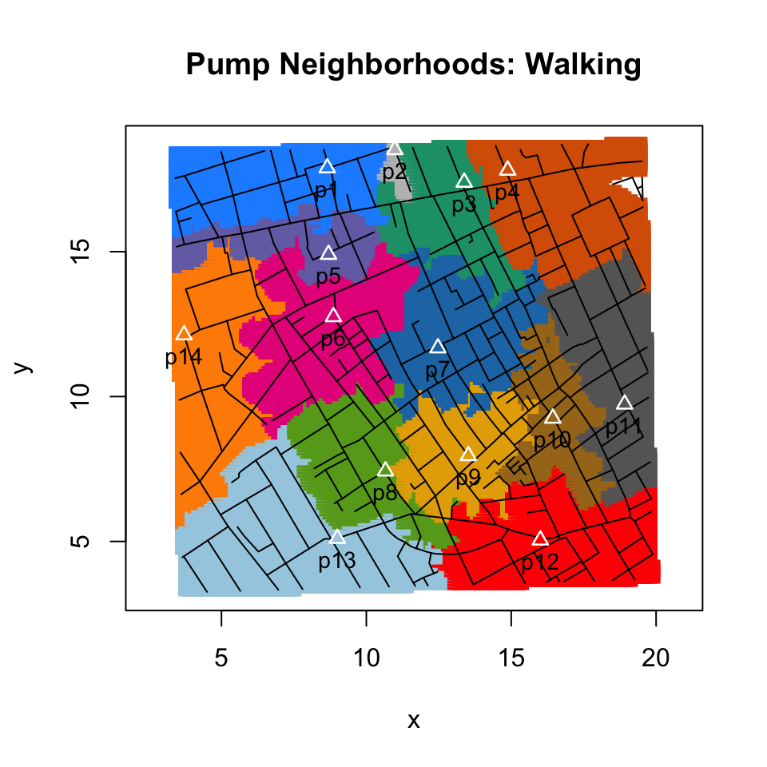
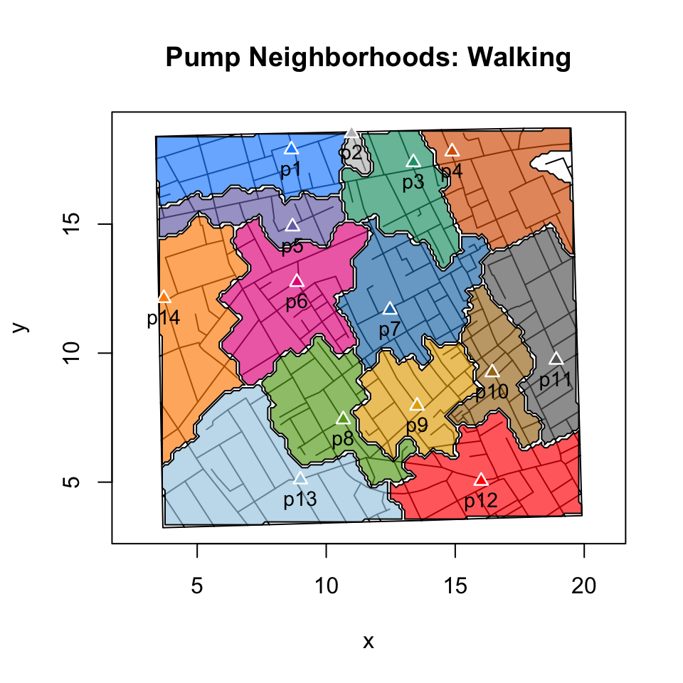
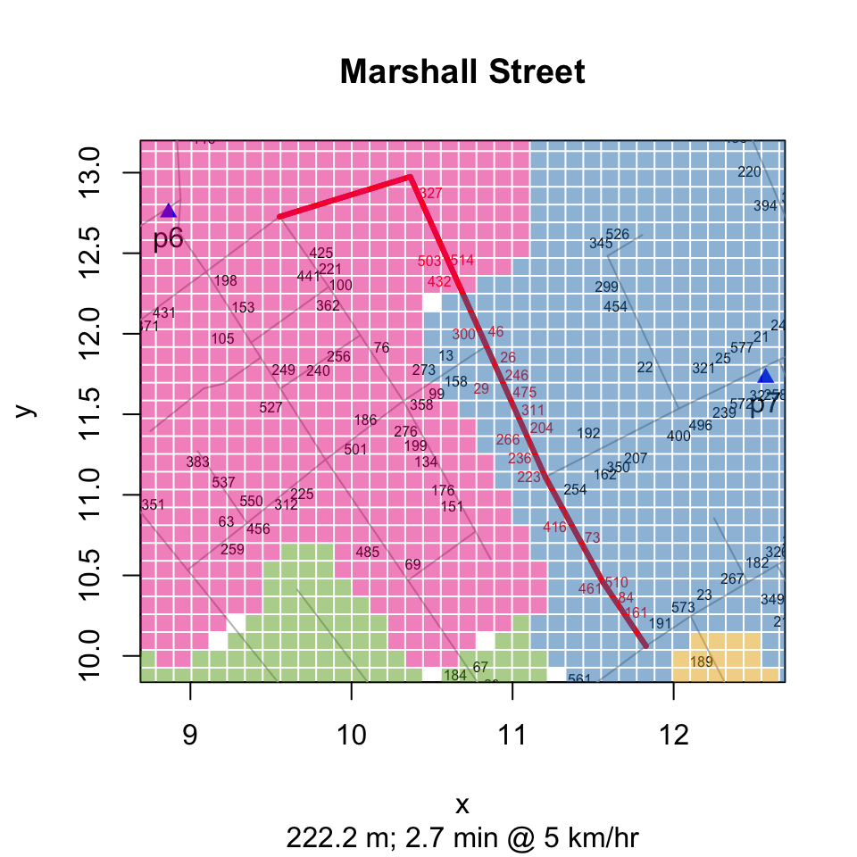
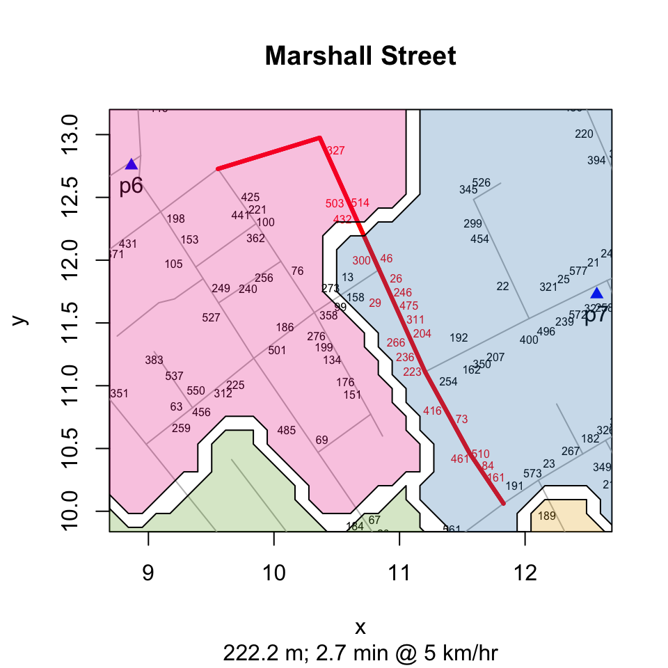
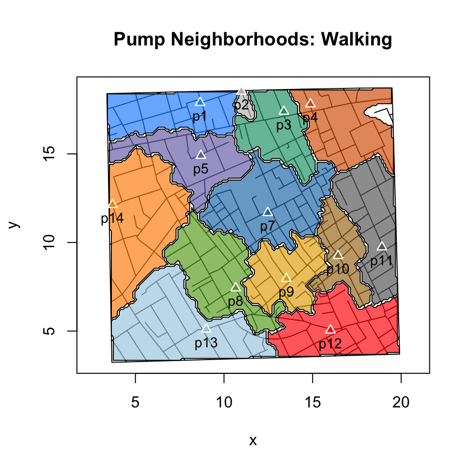
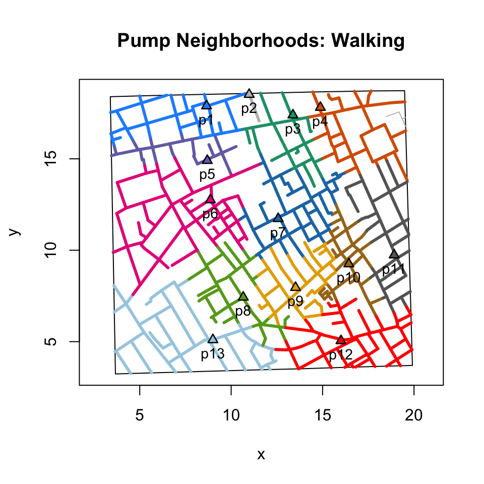

- points v. polygons
lindbrook
2019-01-04
Source:vignettes/notes/pump.neighborhoods.notes.Rmd
pump.neighborhoods.notes.RmdThere are two types of “expected” pump neighborhood area plots. The first is based on graphics::points(); the second is based on graphics::polygon().
plot(neighborhoodWalking(vestry = TRUE, case.set = "expected"),
type = "area.points")
plot(neighborhoodWalking(vestry = TRUE, case.set = "expected"),
type = "area.polygons")
why two types?
The reason for two is that while the points() based approach is computationally faster, the polygon() approach has vector graphics on its side. In certain applications, when you zoom in you’ll see the granularity of the points() based approach:
streetNameLocator("marshall street", zoom = TRUE)
addNeighborhoodCases(type = "expected")
streetNameLocator("marshall street", zoom = TRUE)
addNeighborhoodWalking()
how to compute neighborhood area plots
For both area plots, I use “expected” data to compute the expected neighborhood area. Using sp::spsample() and sp::Polygon(), I place 20K regularly-spaced points across the face of the map (in the “real world”, points are approximately 6 meters apart.).1
For each simulated case, I compute the closet water pump using Euclidean and walking distances. The details are in cholera::simulateFatalities(), located in simulateFatalities.R.
This classifies the “expected” or simulated cases by pump neighborhood. By coloring the points by “their” pump, the different pump neighborhoods will emerge.
how to compute polygon vertices
To use polygon(), we need the vertices. To my knowledge, this is not a simple, straightforward task.
Using the case of pump the Broad Street pump (#7) and walking distance as the measure of proximity, I illustrate my approach. By my calculation, 1,709 of the simulated cases fall within the Broad Street pump neighborhood:

While the convex hull may be the first thing that comes to mind, it’s not a good general solution. This is because the convex hull creates a polygon based on the most outlying points. As a result, when there are concavities, points outside the neighborhood will fall within the resulting polygon:

To find the vertices of the pump neighborhood polygon, I’d argue that we want the points along the perimeter to serve as the vertices of the polygon. To identify these points, I select the point that do not have neighbors at each of the four cardinal directions (i.e., North, South, East and West). See peripheryCases().

The final task is to connect the dots in the right order. Essentially, we want to add pearls to a string to form the polygon.

String of pearls algorithms
I have coded two workable solutions that aim to connect the dots in the “right” order.2 The first, pearlString(), cycles through the candidate points and uses reverse epicycles to find the next point to add to the string of pearls. This is the default for walking neighborhoods. The second, travelingSalesman(), uses the ‘TSP’ package and its implementation of repetitive nearest neighbors to compute the string of pearls. This is the default for Euclidean neighborhoods.
neighborhood <- neighborhoodWalking(-6, case.set = "expected", vestry = TRUE)
plot(neighborhood, type = "area.polygons", method = "pearl.string")
neighborhood <- neighborhoodWalking(-6, case.set = "expected", vestry = TRUE)
plot(neighborhood, type = "area.polygons", method = "traveling.salesman")
why 20K observations?
Of equal, if not greater importance is the density of simulated cases. As far as pearlString() is concerned, I found that the algorithm can fail by getting stuck in dead ends or by skipping over points. As is often the case, more data helps. As a tradeoff between computational speed and functional robustness, I ended up using 20K simulated cases.
Expected areas v. expected roads.
plot(neighborhoodWalking(case.set = "expected"))
While easier to “read”, the area plots are potentially misleading. Conceptually, the problem is that they take the focus away from roads and puts it on regions, which may not be meaningful because they can represent locations where there are no roads or residences. Computationally, the problem is that the shape of a neighborhood will be sensitive to how we determines a case’s street address. Different implementations can produce different results.